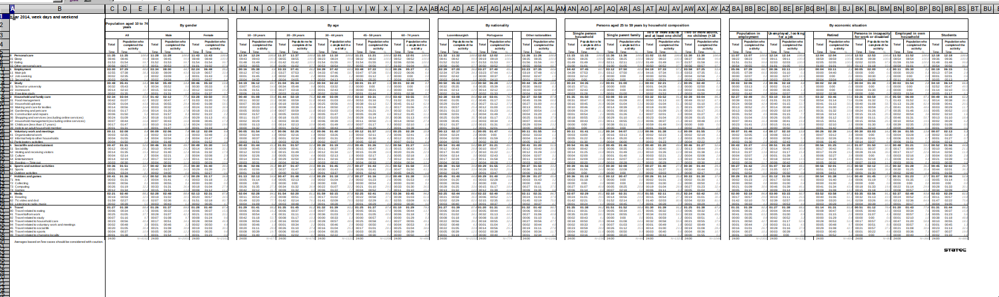
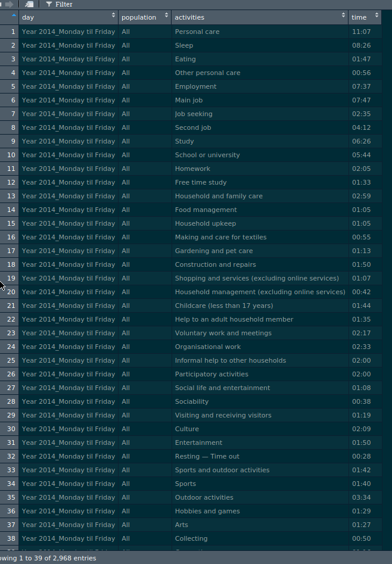

Going from a human readable Excel file to a machine-readable csv with {tidyxl}
I won’t write a very long introduction; we all know that Excel is ubiquitous in business, and that it has a lot of very nice features, especially for business practitioners that do not know any programming. However, when people use Excel for purposes it was not designed for, it can be a hassle. Often, people use Excel as a reporting tool, which it is not; they create very elaborated and complicated spreadsheets that are human readable, but impossible to import within any other tool.
In this blog post (which will probably be part of a series), I show you how you can go from this:

to this:

You can find the data I will use here. Click on the “Time use” folder and you can download the workbook.
The Excel workbook contains several sheets (in French and English) of the amount of time Luxembourguish citizens spend from Monday to Sunday. For example, on average, people that are in employment spend almost 8 hours sleeping during the week days, and 8:45 hours on Saturday.
As you can see from the screenshot, each sheet contains several tables that have lots of headers and these tables are next to one another. Trying to import these sheets with good ol’ readxl::read_excel() produces a monster.
This is where {tidyxl} comes into play. Let’s import the workbook with {tidyxl}:
library(tidyverse)
library(tidyxl)
time_use_xl <- xlsx_cells("time-use.xlsx")Let’s see what happened:
head(time_use_xl)## # A tibble: 6 x 21
## sheet address row col is_blank data_type error logical numeric
## <chr> <chr> <int> <int> <lgl> <chr> <chr> <lgl> <dbl>
## 1 Index A1 1 1 FALSE character <NA> NA NA
## 2 Index B1 1 2 TRUE blank <NA> NA NA
## 3 Index C1 1 3 TRUE blank <NA> NA NA
## 4 Index D1 1 4 TRUE blank <NA> NA NA
## 5 Index E1 1 5 TRUE blank <NA> NA NA
## 6 Index F1 1 6 TRUE blank <NA> NA NA
## # … with 12 more variables: date <dttm>, character <chr>,
## # character_formatted <list>, formula <chr>, is_array <lgl>,
## # formula_ref <chr>, formula_group <int>, comment <chr>, height <dbl>,
## # width <dbl>, style_format <chr>, local_format_id <int>
As you can see, the sheet was imported, but the result might be unexpected. Actually, time_use_xl is a tibble object, where each row is one cell of the Excel sheet. This might seem very complicated to handle, but you will see that it actually makes things way easier.
I only want to work on the English sheets so I use the following code to ignore the French ones:
sheets <- xlsx_sheet_names("time-use.xlsx") %>%
keep(grepl(pattern = ".*day$", .))Also, there’s a sheet that aggregates the results for week days and weekends, which I also ignore.
Now, to extract the tables from each sheet I wrote the following function:
extract_data <- function(sheet){
activities <- sheet %>%
filter(col == 2) %>%
select(row, character) %>%
filter(row %in% seq(6,58)) %>%
rename(activities = character) %>%
select(-row)
cols_to_extract <- sheet %>%
filter(grepl("Population who completed.*", character)) %>%
pull(col)
headers_pos <- cols_to_extract - 1
headers <- sheet %>%
filter(col %in% headers_pos, row == 3) %>%
pull(character)
cols_to_extract %>%
map(~filter(sheet, col %in% .)) %>%
map(~select(., sheet, address, row, col, character)) %>%
map(~filter(., row %in% seq(6,58))) %>%
map(~select(., character)) %>%
map2(.x = ., .y = headers, ~mutate(.x, "population" = .y)) %>%
map(., ~bind_cols(activities, .)) %>%
bind_rows()
}
Let’s study it step by step and see how it works. First, there’s the argument, sheet. This function will be mapped to each sheet of the workbook. Then, the first block I wrote, extracts the activities:
activities <- sheet %>%
filter(col == 2) %>%
select(row, character) %>%
filter(row %in% seq(6,58)) %>%
rename(activities = character) %>%
select(-row)
I only keep the second column (filter(col == 2)); col is a column of the tibble and if you look inside the workbook, you will notice that the activities are on the second column, or the B column. Then, I select two columns, the row and the character column. row is self-explanatory and character actually contains whatever is written inside the cells. Then, I only keep rows 6 to 58, because that is what interests me; the rest is either empty cells, or unneeded. Finally, I rename the character column to activities and remove the row column.
The second block:
cols_to_extract <- sheet %>%
filter(grepl("Population who completed.*", character)) %>%
pull(col)
returns the index of the columns I want to extract. I am only interested in the people that have completed the activities, so using grepl() inside filter(), I located these columns, and use pull()… to pull them out of the data frame! cols_to_extract is thus a nice atomic vector of columns that I want to keep.
In the third block, I extract the headers:
headers_pos <- cols_to_extract - 1
Why - 1? This is because if you look in the Excel, you will see that the headers are one column before the column labeled “People who completed the activity”. For example on column G, I have “People who completed the activity” and on column F I have the header, in this case “Male”.
Now I actually extract the headers:
headers <- sheet %>%
filter(col %in% headers_pos, row == 3) %>%
pull(character)
Headers are always on the third row, but on different columns, hence the col %in% headers_pos. I then pull out the values inside the cells with pull(character). So my headers object will be an atomic vector with “All”, “Male”, “Female”, “10 - 19 years”, etc… everything on row 3.
Finally, the last block, actually extracts the data:
cols_to_extract %>%
map(~filter(sheet, col %in% .)) %>%
map(~select(., sheet, address, row, col, character)) %>%
map(~filter(., row %in% seq(6,58))) %>%
map(~select(., character)) %>%
map2(.x = ., .y = headers, ~mutate(.x, "population" = .y)) %>%
map(., ~bind_cols(activities, .)) %>%
bind_rows()
cols_to_extract is a vector with the positions of the columns that interest me. So for example “4”, “7”, “10” and so on. I map this vector to the sheet, which returns me a list of extracted data frames. I pass this down to a select() (which is inside map()… why? Because the input parameter is a list of data frames). So for each data frame inside the list, I select the columns sheet, address, row, col and character. Then, for each data frame inside the list, I use filter() to only keep the rows from position 6 to 58. Then, I only select the character column, which actually contains the text inside the cell. Then, using map2(), I add the values inside the headers object as a new column, called population. Then, I bind the activities column to the data frame and bind all the rows together.
Time to use this function! Let’s see:
clean_data <- sheets %>%
map(~filter(time_use_xl, sheet %in% .)) %>%
set_names(sheets) %>%
map(extract_data) %>%
map2(.x = ., .y = sheets, ~mutate(.x, "day" = .y)) %>%
bind_rows() %>%
select(day, population, activities, time = character)
glimpse(clean_data)## Observations: 2,968
## Variables: 4
## $ day <chr> "Year 2014_Monday til Friday", "Year 2014_Monday til …
## $ population <chr> "All", "All", "All", "All", "All", "All", "All", "All…
## $ activities <chr> "Personal care", "Sleep", "Eating", "Other personal c…
## $ time <chr> "11:07", "08:26", "01:47", "00:56", "07:37", "07:47",…
So I map my list of sheets to the tibble I imported with readxl, use set_names to name the elements of my list (which is superfluous, but I wanted to show this; might interest you!) and then map this result to my little function. I could stop here, but I then add a new column to each data frame that contains the day on which the data was measured, bind the rows together and reorder the columns. Done!
Now, how did I come up with this function? I did not start with a function. I started by writing some code that did what I wanted for one table only, inside one sheet only. Only when I got something that worked, did I start to generalize to several tables and then to several sheets. Most of the time spent was actually in trying to find patterns in the Excel sheet that I could use to write my function (for example noticing that the headers I wanted where always one column before the column I was interested in). This is my advice when working with function programming; always solve the issue for one element, wrap this code inside a function, and then simply map this function to a list of elements!